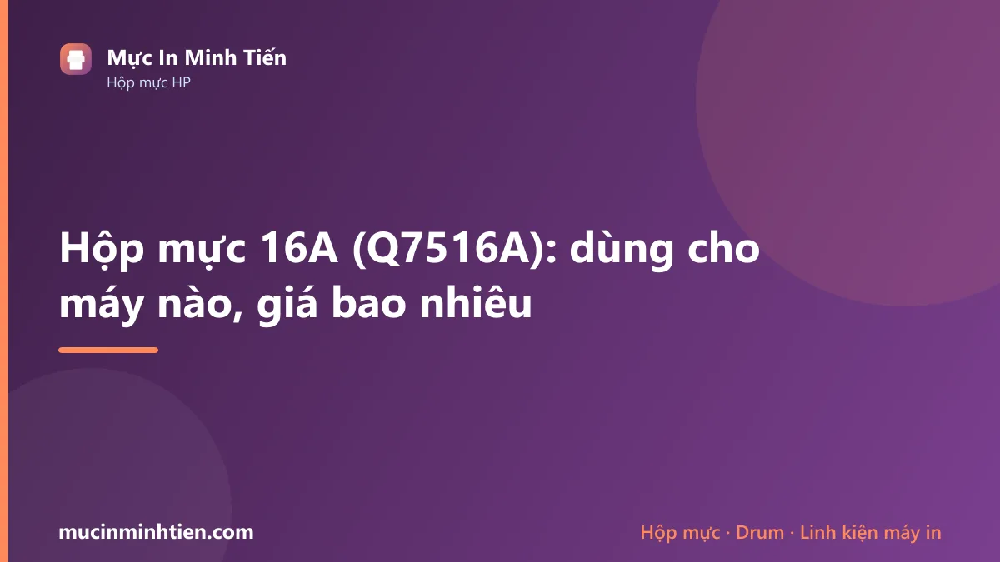
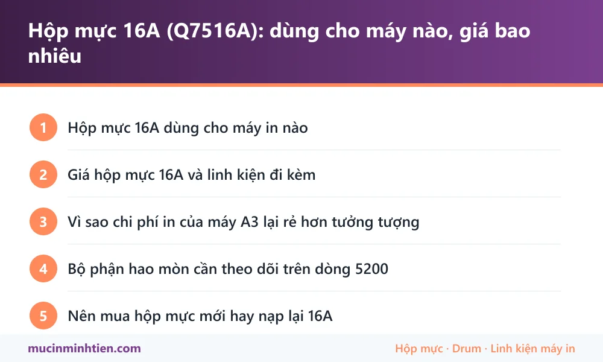

Hộp mực 16A (Q7516A): dùng cho máy nào, giá bao nhiêu

Hộp mực 16A (mã HP Q7516A) dùng cho dòng máy in khổ A3 HP LaserJet 5200, 5200n, 5200tn, 5200dtn và 5200L. Một hộp đầy in được khoảng 12.000 trang — cao gấp nhiều lần hộp mực máy A4 thông thường.
Hộp mực 16A dùng cho máy in nào
| Dòng máy | Model cụ thể | Ghi chú |
|---|---|---|
| HP LaserJet | 5200, 5200L, 5200n, 5200tn, 5200dtn | Máy in khổ A3 dùng cho bản vẽ, sơ đồ, tài liệu khổ lớn |
Giá hộp mực 16A và linh kiện đi kèm
Bảng dưới là hàng đang có tại kho 77 Bắc Hải, Phường Diên Hồng, TP.HCM, giá tham khảo cho khách lẻ. Đây là giá thật trong bảng giá công khai, không phải giá quảng cáo.
| Sản phẩm | Nhóm | Giá tham khảo |
|---|---|---|
| Chíp mực 16A cho máy in HP LaserJet 5200/5200L/5200LX/5200N/5200DTN/5200T Canon LBP3500 - Chíp 16A | Hộp mực & mực in máy in | 50.000 đ |
| Hộp mực in HP 16A (Q7516A) dùng cho máy in Hp 5200/ Canon 3500/3800/3810 - 16A | Hộp mực & mực in máy in | 500.000 đ |
| Hộp Mực 16A / 5200 / 3500 - Mực 16A | Hộp mực & mực in máy in | 530.000 đ |
| Combo 10 cặp ron từ 16A ( bạc trục từ) - ron 16A | Trục từ | 50.000 đ |
| TRỤC TỪ HP 5200-16A - từ 16A | Trục từ | 90.000 đ |
| Drum 48A sử dụng cho máy in HP M15a / M16a / M28a / M28W / M29a/136X - 48A | Drum / Trống máy in | 40.000 đ |
| Drum 248A sử dụng cho máy in HP M15a-M16a-M28a-M28W-M29a - Drum 48 | Drum / Trống máy in | 50.000 đ |
| Trống Drum 16A dùng cho hộp mực máy in HP 5200/5035/M435/M701/M706 , Canon LBP-3500/6780X/8100/8780X/8870 - Drum 16A | Drum / Trống máy in | 60.000 đ |
| Trống Drum 16A dùng cho máy in HP 5200, 5035, M435, M701, M706 , Canon 3500, 6780X, 8100, 8780, 8870 (Mitsu) - Drum 16M | Drum / Trống máy in | 120.000 đ |
| Nhông lô ép , nhông sấy HP LaserJet 5200/ 5200n/ 5200tn/ 5200L, Canon 3500 / 706 ( 16A ) ( giá tính trên 1 cái) - Nhông lô ép 16A | Lô sấy, lô ép & linh kiện sấy | 80.000 đ |
| Nhông Trung Gian Sấy HP 5200 / 16A ( Bộ 3 cái) - Nhông trung gian 16A | Lô sấy, lô ép & linh kiện sấy | 99.000 đ |
| Quả đào lấy giấy HP 5200/3500/3900/16A khay 1 - Quả đào lấy giấy HP 5200/3500/3900/16A khay 1 - Quả đào 16A khay 1 | Giấy in & Ruy băng | 40.000 đ |
| Quả đào lấy giấy HP 5200/3500/3900/16A khay 2 - Quả đào lấy giấy HP 5200/3500/3900/16A khay 2 | Giấy in & Ruy băng | 50.000 đ |
| Quả đào-bánh xe lấy giấy 16A HP 5200-canon 3500 -khay 2 - Quả đào 3500 | Giấy in & Ruy băng | 50.000 đ |
| Trục sạc HP 29X-16A-5200-IR 2016/2006 - Sạc 16A | Linh kiện khác | 50.000 đ |
Không thấy mã cần tìm? Dùng công cụ tra cứu theo model máy hoặc xem bảng giá đầy đủ 773 mã.
Vì sao chi phí in của máy A3 lại rẻ hơn tưởng tượng
Nhiều người nghĩ máy in A3 tốn kém, nhưng tính trên mỗi trang thì thường ngược lại. Hộp mực 16A in được khoảng 12.000 trang, trong khi hộp mực máy A4 nhỏ như 107A chỉ khoảng 1.000 trang. Chênh lệch gấp mười hai lần về số trang, trong khi giá hộp không chênh tới mức đó.
Ngoài ra dòng 5200 dùng khung kim loại, cụm sấy khỏe, thiết kế cho tải trọng in lớn. Máy chịu được in liên tục hàng nghìn trang mỗi tháng mà không xuống chất lượng — điều mà máy A4 để bàn không làm được.
Đổi lại, máy nặng, chiếm chỗ và linh kiện thay thế đắt hơn. Đây là máy dành cho đơn vị thật sự cần in khổ lớn hoặc in số lượng nhiều, không phải cho văn phòng nhỏ.
Bộ phận hao mòn cần theo dõi trên dòng 5200
Với máy tải trọng lớn, việc bảo trì theo số trang quan trọng hơn theo thời gian. Ba nhóm linh kiện cần để mắt:
- Drum — trên dòng này drum là bộ phận tách rời khỏi hộp mực ở một số cấu hình, tuổi thọ tính bằng vài chục nghìn trang. Xước drum gây sọc dọc lặp lại đều.
- Lô sấy và lô ép — chịu nhiệt liên tục, sau nhiều chục nghìn trang sẽ xuống cấp gây nhòe bản in hoặc nhăn giấy.
- Trục từ — mòn gây bản in nhạt không đều theo chiều ngang trang.
Kho hiện có sẵn drum, trục từ và linh kiện sấy cho dòng 5200 — xem bảng giá bên dưới.
Nên mua hộp mực mới hay nạp lại 16A
Với 16A, nạp lại là lựa chọn gần như mặc định ở các đơn vị in nhiều, vì hộp mực dung lượng lớn nên chênh lệch chi phí giữa nạp và mua mới rất đáng kể.
Điểm cần chú ý là chất lượng mực bột. Máy A3 in tài liệu khổ lớn, mảng đen nhiều, nên mực kém chất lượng lộ khuyết điểm rất nhanh: bản in loang lổ, bám bẩn drum, và làm bẩn cụm sấy. Với dòng máy này, tiết kiệm vài chục nghìn tiền mực có thể đổi lấy chi phí thay drum lớn hơn nhiều lần.
Nên thay hộp hoặc thay drum khi bản in bắt đầu có sọc lặp lại đều đặn theo chu kỳ cố định — đó là dấu hiệu bề mặt drum đã hỏng, không vệ sinh được.

Câu hỏi thường gặp về hộp mực 16A
Hộp mực 16A in được bao nhiêu trang?
Máy HP 5200 in A3 có in được A4 không?
Bản in máy 5200 bị sọc dọc lặp lại đều thì thay gì?
Máy 5200 đã ngừng sản xuất, còn linh kiện thay không?
Bài viết liên quan
- Máy in bị sọc đen dọc: 5 nguyên nhân và cách khắc phục
- Cách chọn mực in đúng máy, bền máy và tiết kiệm
- Dịch vụ sửa máy in tận nơi TP.HCM
- Hộp mực 337: dùng cho máy nào, giá bao nhiêu
- Hộp mực Canon 325: dùng cho máy nào, giá bao nhiêu
- Tra hộp mực và linh kiện theo model máy in
- Nạp mực máy in tận nơi TP.HCM từ 80.000đ